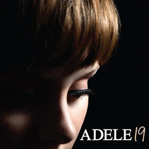

ADELE

Discografía
-

19
2008
-

21
2011
-
Live At The Royal Albert Hall
2011
-
25
2015
-

30
2021
Adele, famosa por dar pistas acerca de los lanzamientos de sus álbumes en redes sociales, insinuó en 2018 haber comenzado a trabajar en su cuarto álbum de estudio. El 15 de febrero de 2020, en un video que se hizo viral en las redes sociales, anunció en la boda de una de sus amigas el lanzamiento de su álbum en septiembre de 2020. El estatus del álbum sigue sin confirmarse luego de que en medio de la pandemia del COVID-19, Adele insinuara que el lanzamiento pudiera ser pospuesto para el 2021.